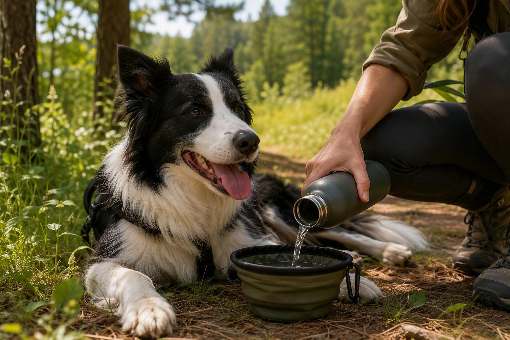

HOT DAYS
Water, shade and a slower pace
Bring fresh water, choose cooler times of day, and watch for signs of overheating such as heavy panting, restlessness or lethargy. Never leave your dog in a car: under Swedish Board of Agriculture (Jordbruksverket) regulations, an animal must not be left unattended in a car if the inside temperature risks rising above 25°C (77°F), and in as little as 20–50 minutes in a hot car the damage can become life-threatening.
Vet-reviewed advice from Agria ↗Rules on animals in cars, Jordbruksverket ↗